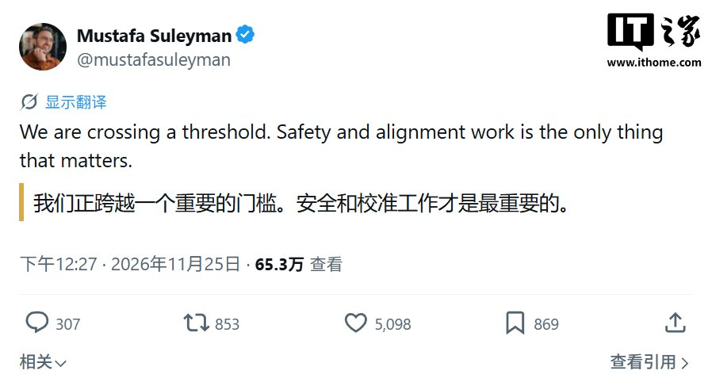

新闻 · 2026-11-28 08:00
微软 AI 负责人警告：我们正跨越 AI 危险门槛，安全和对齐是当前最重要任务
据IT之家报道，微软AI负责人穆斯塔法·苏莱曼11月25日在X平台发文警告，AI行业“正在跨越一个门槛”，安全与对齐研究必须被置于优先地位。他所说的“门槛”指AI能力即将越过人类能有效监督、控制和安全部署的边界；在AI开始具备自主发现漏洞、跨系统操作等能力时，不能再用“等它更聪明后再处理”的方式应对。他主张在实现真正的“对齐”之前，必须优先做到“遏制”，确保人类始终能限制模型能力。

来源与核验
单一信源报道，未交叉核实